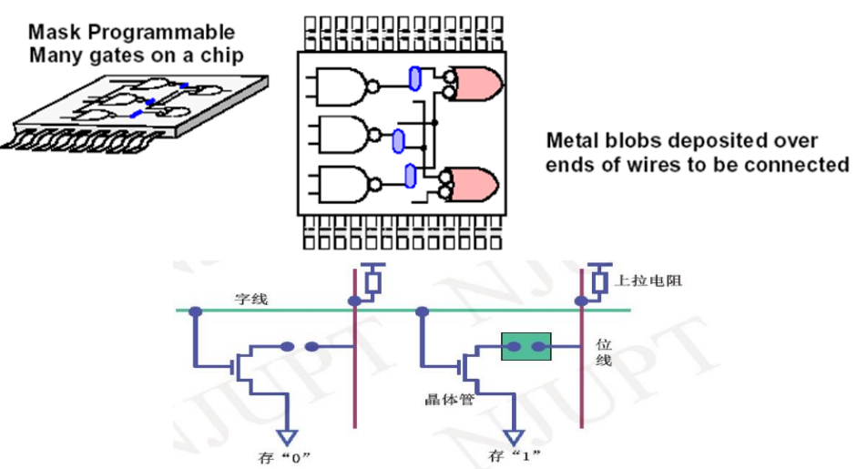
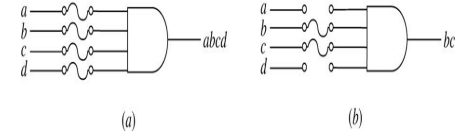
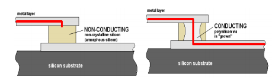
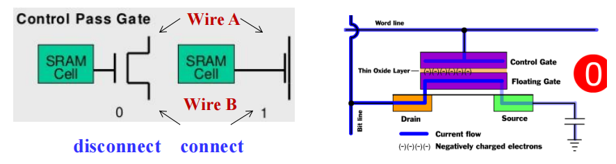

Chap 5: Digital HardWare Implementation⚓︎
约 2390 个字 预计阅读时间 12 分钟
核心知识
- ROM
- PAL®
- PLA
Design Space⚓︎
注：本节中出现的技术参数等重要知识点见 Chap 3。由于考试不考，这里仅仅稍微谈一下 CMOS 电路，若要了解具体原理，推荐阅读修佬的笔记和 wiki。
CMOS Circuit Technology⚓︎
CMOS 全称：互补式金属氧化物半导体 (complementary metal-oxide semiconductor)
CMOS 晶体管的几何图形：
n-channel CMOS 和 p-channel CMOS：

使用 CMOS 晶体管构建开关电路的模型：
注：左边表示 \(XY\)，右边表示 \(X + Y\)
CMOS 的通用结构及其常见应用
Programmable Implementation Technologies⚓︎
Why Programmable Logic?⚓︎
现实：
- 大规模生产集成电路 (IC)更加经济
- 但许多设计只要求小规模的 IC
因此我们需要能够被大规模生产，且能够实现很多只要求小规模设计的 IC。而可编程逻辑 (programmable logic)能够实现这些目标。
其他好处：
- 很多可编程逻辑设备是现场可编程的 (field-programmable)，即能够在生产环境之外的地方进行编程
-
大多数可编程逻辑设备是可删除的 (erasable)，并且是可重新编程的 (reprogrammable)
- 允许更新设备或纠正错误
- 允许将设备重用于不同的设计中
- 课程实验的理想选择
-
可编程逻辑设备被用于原型设计，用于常规 IC 的销售
Programmable Logic Technologies⚓︎
-
连接控制 (control connections)
- mask programming

- 保险丝 (fuse)：切断不想要的连接

- antifuse：生成连接
 - mask programming
参考：antifuse
-
晶体管开关控制 (control transistor switching)
- 单位存储元素 (single-bit storage element)
-
在浮栅 (floating gate) 上存储电荷
- 可删除
- 电子可删除
- 迅速（在闪存内）

参考：浮栅
- 查找表的构建 (build lookup tables(LUT))：存储函数的元素
3 人投票器

Programmable Logic Device⚓︎
- 只读存储器 (read only memory, ROM)：与门的固定阵列的和或门的可编程阵列
- 可编程阵列逻辑 (programmable array logic, PAL®)：与门的可编程阵列，以及或门的固定阵列
- 可编程逻辑阵列 (programmable logic array, PLA)：与门的可编程阵列，以及或门的可编程阵列
- 复杂可编程逻辑器件 (complex programmable logic device, CPLD)/ 现场可编程逻辑门阵列 (field-programmable gate array, FPGA)：由于它相当复杂，因此被被称为“建筑 (architecture)”( 此块内容不会详细展开 )
Logical Symbols⚓︎
下面这些符号在本章后续部分将会经常用到，请务必弄清楚它们的含义！
Read Only Memory⚓︎
只读存储器 (read only memories)/可编程只读存储器 (programmable read only memories) 拥有：
- \(N\) 个输入
- \(M\) 个输出
- \(2^N\) 个译码后的最小项
输出项即为SOM( 可与 PAL 的输出对照 )
- 用带有 \(2^N\) 个输出的固定 (fixed) 与门阵列 ( 即 \(N-2^N\) 译码器 )，实现所有 \(N\) 个最小项
- 通过带有 \(M\) 个输出的可编程 (programmable) 或门阵列，构成 \(M\) 个最小项之和的表达式
关于 ROM 和 PROM 的程序只是一个多输出的真值表：
- 如果是
1，则表明相应的最小项与其对应的输出之间建立了连接 - 如果是
0，则表明没有连接
只读存储器可被视为内存 (memory)，而它的输入被视为数据 ( 即输出 ) 地址 (addresses)
ROM 的规模 = 地址宽度 ( 字的个数 ) \(\times\) 字的位宽
如果不理解这个概念，可参考 Chap 7 对 RAM 规模的描述
Example

- 固定与门阵列是一个 3-8 译码器，用来实现最小项
- 可编程或门阵列使用单线，表示对或门的所有输入
- 阵列中的 "\(\times\)" 表示最小项与或门的连接
🌰：如果输入为 \((A_2, A_1, A_0) = 001\)，那么输出位 \((F_3, F_2, F_1, F_0) = 0011\)
通过真值表分析 (\(B[5: 0] = A[2: 0] \times A[2: 0]\))：

根据结果，我们采用 \(2^3 \times 4\) ROM，框图如下：
化简后的真值表：
电路实现：

注：B0 和 B1 并不在可编程阵列中 ( 原因见前面的分析 )

该部分可结合 RAM 一节阅读
Programmable Array Logic(PAL)⚓︎
构成：可编程与门阵列 + 固定或门阵列 ( 与 ROM 正好相反 )
可以看到与门的输出线路和或门的输入线路之间的交点并不是用 \(\times\)，而是用 \(\cdot\) 表示的，说明或门阵列是固定的，即对应布尔方程的乘积项数量是固定的。再加上每个乘积项的字面量个数可以改变，因此它的输出本质上是SOP。
弊： ROM 保证实现任意有 \(N\) 个输入的 \(M\) 个函数，但 PAL 的或门输入有限
利：
- 对于特定的内部复杂度，PAL 拥有较大的 \(N\) 和 \(M\)
- 一些 PAL 的输出能被取补 (complement) * ( 实现 POS 函数 )
- ROM 无法实现多级电路 (multi-level circuits) ( 输入输出间没有外部连接 )；而 PAL 由于其自身结构特征，可以轻松实现多级电路
Note
因为每个或门对应的与门数量 ( 或门的输入 ) 是有限的，因此我们得预先做好函数的优化，有时可能需要因式分解
Example
对于下列给定的布尔方程，用 PAL 实现其功能

电路实现：
化简后的布尔方程：
Programmable Logic Array(PLA)⚓︎
相较于前两者而言，PLA 更加灵活，因为它的与门和或门阵列都是可编程的

利：
- PLA 拥有较大的 \(N\) 和 \(M\)，可以实现在 ROM 无法完成的方程 ( 因为 ROM 的输入固定为 N)
- PLA 的所有乘积项均能与或门 ( 输出 ) 相连接，克服了 PAL 或门有限个输入的问题
- 有些 PLA 的输出能取补 (complement)（实现 POS 函数）
弊：
- ⭐乘积项的数量限制了 PLA 的应用：从后面的例子中可以发现——所有的输出“共享”所有的乘积项。因此很容易出现乘积项太多无法表示出来的情况，这时需要通过优化，使一些输出使用相同的乘积项，来节省乘积项的个数
- PAL 的多级电路能力在 PLA 上行不通。因此 PLA 需要外部连接来实现多级电路
Example

布尔方程：
可以看到异或门的作用：决定是否取输出的补
给定布尔方程为：
$$ \begin{align} F_1 & = \overline{AB}C + \overline{A}B\overline{C} + A\overline{BC} \notag \ F_2 & = AC + AB + BC \notag \end{align} $$ 可以发现它们的乘积项个数为6。如果我们再用上面那个PLA(4个乘积项)，看起来无法实现这2个函数。然而，通过对\(F_1\)取补，我们发现一线生机： $$ \overline{F_1} = AB + AC + BC + \overline{ABC} $$ 现在，\(\overline{F_1}\)与\(F_2\)有3个相同的乘积项，因此总乘积项个数降至4个，可以用前面的PLA实现了！
电路实现：

Lookup Tables⚓︎
注：貌似考试不考
- 内存 ( 通常是静态随机存储器 (static random-acess memory, SRAM)) 能够实现组合逻辑。在 FPGA 中，这样的内存被称为查找表 (lookup tables, LUTs)
🌰：通过 4-1MUX 实现的 2 输入查找表
更大的 MUX 可以通过利用一组更小的 MUX 搭建树状结构来实现。
对上例的改进
 ：用 7 个 2-1MUX 形成树状结构，实现 3 输入 LUT
：用 7 个 2-1MUX 形成树状结构，实现 3 输入 LUT
注：
- 查找表通常比较小：输入为 4 或 6 个，1 个输出，包括 16 或 64 个项
- 因为查找表存储了真值表，因此它可以实现任何 4 或 6 输入的函数
- 因此，设计问题转为：如何将一组给定的函数分解为一组 4 输入或 6 输入的两级函数
FPGA⚓︎

FPGA 的内部结构分成 3 部分：
-
可编程逻辑块 (programmable/configurable logic block, CLB)，它是 FPGA 的基本逻辑单元
- 在 LUTs 中的存储单元是易变的 ( 断电后不保存数据 )
- 使用 PROM( 可编程 ROM) 永久保存数据
- 当芯片初始化开关箱 / 矩阵时，存储单元从 PROM 中加载
- 可编程开关箱 / 矩阵 (programmable switch box/matrix, SM)，它允许 CLB 的输入和输出通过不同的线路相互连接
- 灵活 (flexibility)：单根线可以连接多少条线路
- 拓扑 (topology)：哪些线路可以被连接
- 可路由 (routability)：多少电路能够被路由到

- 可编程输入输出模块 (programmable input outout module, IOB)，它是在设备外围的特殊逻辑块，用于外部连接

🌰： 用FPGA实现3变量函数\(f = x_1x_2 + \overline{x_2}x_3\)，使用3个CLB(这里用到的是4-1 MUX)

FPGA 使用包含 bit 的位文件 (bitfile) 进行编程

Programmable Logic Functions Implementation⚓︎
目前已知的实现技艺 (Implementation techniques)：
- 译码器 + 或门
- 多路复用器 （+ 非门）
- ROM
- PLA
- PAL
- 查找表 (Lookup tables)
它们被视为结构化实现方法 (structrued implementation methods)，因为在各种情况中，它们潜在的结构已经做了预设（即我们直接使用这些 techniques，而不去关注它的细节）
评论区